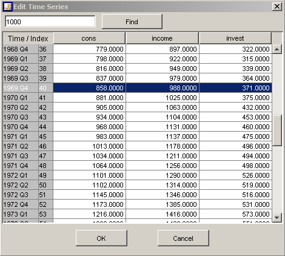

Time Series Editor
The time series editor can be used to view and edit
datapoints of one or more time series.
-
the precision of the display can be changed via the menu
that appears by RIGHT clicking over the data table
-
changes made by editing the time series must be confirmed
with OK, otherwise they are lost
-
only numbers can be inserted (or
Nan)
-
the search option can be used to find an entry with a
special value, if that value has no exact match, the
closest match is shown in a dialog box, the result will be
highlighted
